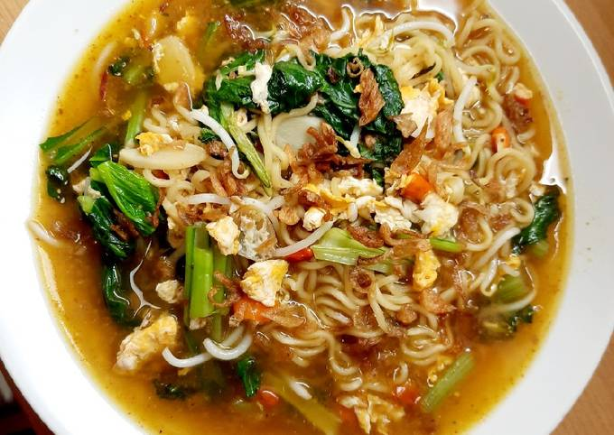

Indomie Kari Ayam

Gambar : Semangkuk Indomie Kari Ayam
Bahan-Bahan
- 1 bungkus Indomie Kari Ayam
- 2 sdm saus sambal
- 1/2 sdm saus tomat
- 1/2 sdm cabe merah bubuk
- 1 sdt lada bubuk
- 5 Cabe Rawit
- 1 Telur
- 2 Sendok Bawang Goreng
Langkah
- Panaskan air secukupnya
- Bila sudah mendidih masukkan mie dan cabe rawit
- Rebus sampai 3/4 matang, lalu masukkan telur dalam rebusan
- Pada mangkok penyajian, tuang bumbu dan minyak indomie
- Pada mangkok penyajian, tambahkan saus sambal, saus tomat,
cabe merah bubuk, lada bubuk, lalu aduk
- Bila telur sudah matang (sesuai selera), amtikan kompor
- Tuangkan sedikit air rebusan mie ke mangkok penyajian, lalu aduk rata
- Kemudian tuang semua mie dan telur
- Taburi bawang goreng
- Selamat Menikmati